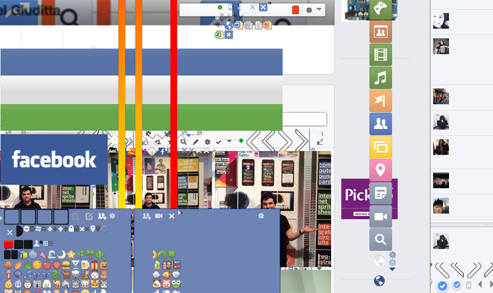
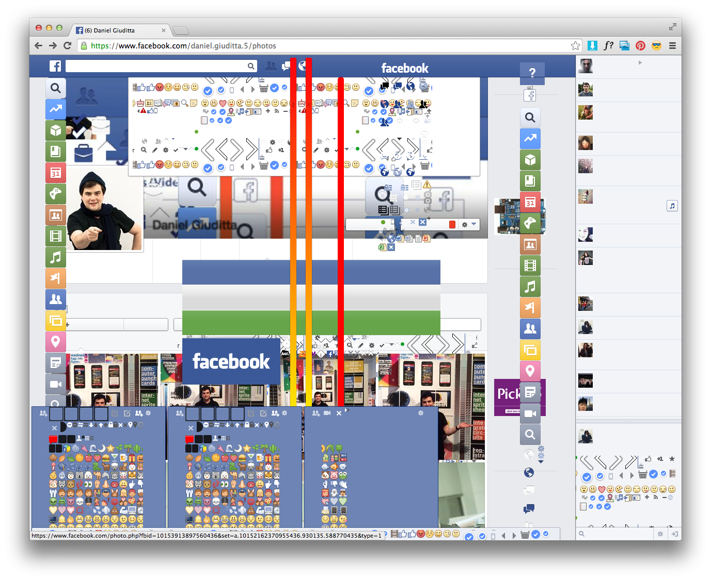
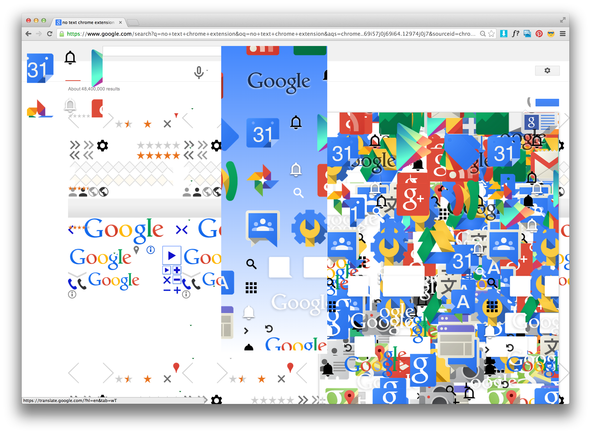
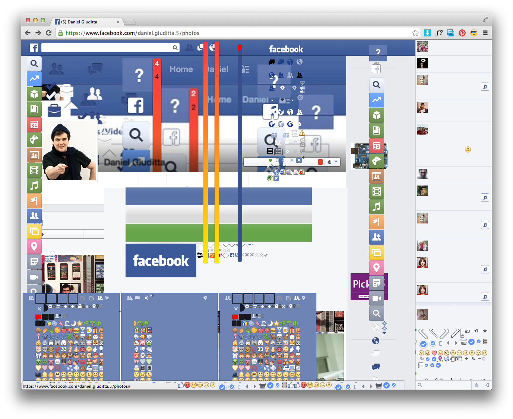

---
layout: page
title: CSS Sprite explosion
author: Daniel Giuditta
description: CSS sprite sheets are strange artifact of contemporary web infrastructure that are on the verge of extinction. Websites like Google and Facebook are served many millions of times per day. The contents of the webpage have to be sent from the server to your computer, and each time the 'client' and the server communicate its costs a fraction of a penny. CSS sprite sheets are large image maps masked out by divs. They can be manually revealed by isolating the element in web inspector, expanding the width and height of the parent div so that the frame around the sprite sheet no longer masked out a single icon. In some cases I had to move the background positioning to 0,0 so that the image was centered in the now expanded parent frame. In contrast to the Content Stripper which showed a webpage at its most minimal, manually revealing sprite sheets created a texture of density on familiar sites. Facebook with all of its sprite sheets revealed shows the hidden structure of Facebook — the Facebook that's always there but we never see.
category: project
printready: true
---



